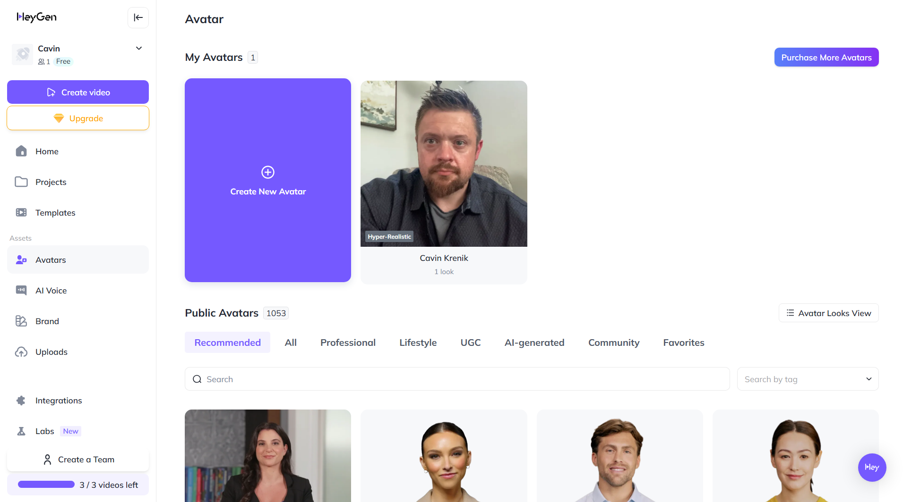

HeyGen AI Avatar
This image was generated using HeyGen, showcasing how AI can create realistic avatars.
The Double-Edged Sword: Why This Path Can Backfire
Using AI to create lifelike avatars and cloned voices might seem like a clever way to present yourself or your ideas. However, consider the potential for this to backfire. If discovered, or if authenticity is questioned, the damage to your personal reputation and credibility can be significant and difficult to repair. In an increasingly digital world, genuine human connection and trust are invaluable – are you risking these for a fleeting technological advantage? The shortcuts you take today might lead to a longer, harder road tomorrow for yourself.
AI-Generated Avatar Video
This video demonstrates how an AI-generated avatar of myself could be used for school work.
Its not pefect, but with a little work I could probably make it pretty indestinguishable from real life.
Voice-Cloned Avatar
This video showcases an AI avatar of me with a different, AI-generated voice.
Strategies for Using AI Ethically in the Classroom
Key principles for responsible AI integration in education.
Implement Transparent AI Policies
Establish clear policies outlining the function of AI tools, the nature of data being utilized, and who has access to this information. All stakeholders—students, parents, teachers, and administrators—should be on the same page regarding AI's roles and responsibilities.
Balance AI Use with Traditional Methods
Preserve a balance with tried-and-true pedagogical practices. Traditional methods that encourage critical thinking, collaboration, and hands-on learning complement AI's strengths, ensuring technological advancements enhance rather than overshadow the vital teacher-student relationship.
Prioritize Data Privacy and Security
Institute stringent data security protocols to defend against breaches and unauthorized access, ensuring that students' privacy is not compromised. The sensitivity of data gathered to personalize learning demands rigorous protection.
Perform Regular Assessment of AI Tools and Knowledge
Conduct routine evaluations of AI technology for functionality and pedagogical impact on student learning and engagement. Feedback from students and teachers is invaluable for honing AI's role in the classroom.
Practical Ways to Integrate AI Ethically in Your Classroom
Actionable strategies for educators to use AI responsibly today.
Start with Small Tools
Introduce AI with low-risk applications like spelling/grammar checkers (e.g., Grammarly), or interactive feedback tools (e.g., Curipod, Canva Magic Write) to support writing and brainstorming.
Use AI for Administrative Help
Automate repetitive tasks like rubric-based grading, lesson planning, and form generation using tools such as ChatGPT or Google Bard — but always review results before use.
Model Ethical Prompting
Show students how to craft effective prompts that encourage learning, such as asking an AI to “explain this like I’m in 5th grade” or “give me both pros and cons.”
Teach Digital Literacy
Help students critically evaluate AI-generated responses. Encourage them to verify sources, check facts, and ask: “Does this make sense? Is this biased?”
Set Clear Classroom Guidelines
Establish and communicate rules for how AI may or may not be used in classwork, homework, and group projects. Transparency avoids confusion and academic dishonesty.
Keep It Human-Centered
Use AI as a supplement, not a replacement. Maintain the importance of face-to-face discussions, peer collaboration, and teacher-led instruction.
Ethical AI respects privacy, avoids bias, and promotes transparency. Harmful AI violates privacy, reinforces bias, and lacks transparency.
Ethical Uses of AI in Education
Real-world examples of responsible AI integration.
Real-Time Language Translation
AI tools like Google Translate or DeepL can provide real-time captions and translations during class. This helps non-native speakers understand lessons in their preferred language — leveling the playing field.
Accessible Learning for Students with Disabilities
AI-powered text-to-speech, voice assistants, or adaptive keyboards can help students with visual, motor, or learning impairments engage in class activities.
Why it’s ethical: Supports equity in education and upholds students’ right to learn without barriers.
Personalized Feedback and Tutoring
AI can give students instant feedback on writing, math problems, or quizzes — saving teachers time and helping students learn at their own pace.
AI-Powered Emotional Check-ins
Some platforms now use AI to detect student stress or disengagement based on written reflections or video cues — allowing counselors and teachers to intervene early.
AI-Powered Peer Review Platforms
Tools like Eli Review allow students to give structured feedback on each other’s work with AI-supported suggestions.
AI as a Study Buddy
Students use ChatGPT to quiz themselves, summarize textbook content, or explain complex concepts in simpler language.
Multilingual Support for Diverse Classrooms
AI helps teachers translate classroom materials into different languages or offer subtitles for videos.
Unethical Uses of AI in Education
Potential misuses and risks of AI in educational settings.
Plagiarism Disguised as Productivity
Students may use AI to generate full essays, code assignments, or discussion posts, then submit them as their own without understanding the material.
AI Surveillance and Invasive Proctoring
Remote proctoring tools using facial recognition or eye-tracking may falsely flag students, misidentify neurodivergent behaviors, or violate privacy.
Why it’s unethical: It creates undue stress, false accusations, and erodes trust in education.
Algorithmic Grading Without Human Oversight
Schools adopting AI grading tools for essays or applications may unintentionally introduce bias — especially against students who write in nontraditional formats or dialects.
Data Mining Student Behavior
Some apps track student habits, clicks, or even keystrokes and send reports to administrators or parents — often without clear consent or data protection.
Creating Fake Testimonials or Reviews
Students or schools using AI to fabricate positive reviews for projects, products, or personal profiles.
AI-Assisted Gaslighting or Harassment
Using AI-generated content to impersonate someone or spread misinformation in peer-to-peer bullying or social media.
Deepfakes in Student Elections or Campaigns
Fabricating videos or voice clips of opponents during student elections or leadership campaigns.
📌 Bonus Comparison: One Task, Two Approaches
Scenario: A student wants to submit a group project presentation.
- Ethical AI Use: They use AI to improve their slides' design and rehearse with a voice clone for accessibility — crediting tools and collaborating transparently.
- Unethical AI Use: They ask ChatGPT to generate the whole script and slides, then present it as 100% original, ignoring input from group members.